Terceira atividade prática do DELTA BOARD. Você vai criar o seu Assistente Executivo de AI — um Claude Project configurado com todo o contexto profissional acumulado nas APs 01 e 02, pronto para você usar no dia a dia depois do curso.
Ficha técnica
Tipo
Demonstração + Atividade Prática
Duração da prática
12 minutos
Bloco
04 — Como usar AI · Terceira atividade
Técnica de AI
Claude Projects (contexto persistente)
Ferramenta
Claude Projects (Opus 4.7 na geração · Sonnet 4.6 no uso)
Pré-requisito
Ter completado AP01 e AP02 e mantido o chat aberto com todo o contexto acumulado
Entregável
Claude Project configurado com 4 campos preenchidos — seu Assistente Executivo permanente
Antes de começar, veja o que você vai conquistar ao final desta atividade prática
Entregável final: Seu Assistente Executivo de AI — um Claude Project configurado com seu contexto profissional completo, pronto para você usar no dia a dia depois do curso.
Este Project vai com você para sempre. Não é uma atividade do curso — é uma ferramenta que você vai abrir toda segunda-feira pra ajudar nas suas decisões.
Introdução
02. Objetivo de aprendizagem
O que você vai aprender e produzir nesta atividade
Criar o seu próprio Assistente Executivo de AI no Claude Projects, configurado com todo o contexto profissional que você acumulou nas APs 01 e 02. Você sai desta atividade com um assistente personalizado pronto para usar no dia a dia do trabalho — não uma demonstração, uma ferramenta real para o seu pós-curso.
Introdução
03. Conceito — Os 4 elementos de um Project
Da conversa que recomeça do zero ao assistente fixo com memória
Uma conversa normal no Claude começa do zero toda vez. Você precisa reexplicar quem você é, onde trabalha, o que faz. Um Project resolve isso de forma permanente: você configura o contexto uma vez, e o Claude carrega tudo automaticamente em cada nova conversa dentro daquele espaço.
Analogia
É a diferença entre contratar um novo freelancer toda semana e ter um assistente fixo que já conhece a sua empresa, o seu setor e as suas prioridades.
Para criar um Project, você preenche 4 elementos:
1
Nome do Project
Como esse assistente vai aparecer na sua lista (ex: "Assistente Executivo — João").
2
Descrição do Project
Texto curto explicando o objetivo do Project (visível no card do Project).
3
Instruções (System Prompt)
Texto que define a identidade, o contexto e o comportamento do assistente.
4
Arquivos de contexto
Documentos (.md, PDF, .docx, etc.) que o assistente lê em toda nova conversa dentro do Project.
💡 Por que esta atividade é diferente
Em vez de redigitar tudo, deixe o Claude gerar os 4 elementos prontos
O Claude já conhece você pelas APs 01 e 02 — cargo, segmento, mapa Kai-Fu Lee e inteligência competitiva. Nesta atividade você vai pedir a ele para entregar os 4 elementos prontos para colar/upload no Project que você vai criar. Sem retrabalho, com consistência total.
Demonstração
04. O que você vai ver
Fluxo completo em duas fases — geração no chat antigo e configuração do Project
Aviso
A demonstração a seguir é apenas para ilustração durante a aula expositiva. Você não precisa testar agora — você terá sua própria atividade prática logo depois desta seção.
O professor demonstra o fluxo completo em duas fases:
Fase 01 — Geração no chat das APs 01 e 02
O professor volta ao chat acumulado e pede ao Claude que gere os 4 elementos do Project de uma vez:
3 textos simples (Nome, Descrição, Instruções)
2 arquivos .md (os arquivos de contexto resumindo AP01 e AP02)
Em cerca de 1 minuto, o Claude entrega tudo pronto para uso.
Fase 02 — Configuração do Project
O professor cria um Project novo no Claude e preenche cada um dos 4 campos com o conteúdo gerado na Fase 01. Em seguida, testa com uma pergunta de validação. A resposta do Project é completamente diferente da que viria de um chat genérico — ancorada no setor, no cargo e nos casos reais que o aluno pesquisou.
Demonstração
05. Prompt da demonstração
O prompt usado pelo professor para gerar os 4 elementos do Project
Este é o prompt completo usado na demonstração para pedir ao Claude que entregue, no mesmo turno, os 3 textos copiáveis (Nome, Descrição, Instruções) e os 2 artefatos .md (mapeamento Kai-Fu Lee + inteligência competitiva).
Prompt — Demonstração
Agora vou usar tudo que conversamos até aqui (AP01 + AP02) para criar meu Assistente Executivo de AI permanente — um Claude Project para me ajudar nas decisões do dia a dia do meu trabalho.
Para criar esse Project, eu preciso preencher 4 campos:
CAMPO 1 — Nome do Project (texto simples curto)
CAMPO 2 — Descrição do Project (texto simples, 1 a 2 frases)
CAMPO 3 — Instruções do Project (texto simples completo — o System Prompt do assistente)
CAMPO 4 — Arquivos de contexto (2 arquivos .md, um para cada AP anterior)
Por favor, gere os 4 elementos abaixo, em blocos SEPARADOS, para que eu possa copiar/baixar individualmente:
═══════════════════════════════════════════════════════
ELEMENTO 1 — Nome do Project (texto simples)
═══════════════════════════════════════════════════════
Sugira um nome curto e profissional, no formato:
"Assistente Executivo — [meu cargo e empresa]"
═══════════════════════════════════════════════════════
ELEMENTO 2 — Descrição do Project (texto simples, 1-2 frases)
═══════════════════════════════════════════════════════
Descreva o objetivo do Project em 1 ou 2 frases. Inclua meu cargo, meu setor e que este é meu assistente para o dia a dia do meu trabalho.
═══════════════════════════════════════════════════════
ELEMENTO 3 — Instruções do Project (texto simples — System Prompt)
═══════════════════════════════════════════════════════
Crie um System Prompt completo para configurar o assistente. Deve incluir:
- Identidade do assistente (papel, tom)
- Meu contexto profissional completo (segmento, cargo, responsabilidades, equipe — tudo que você já sabe sobre mim)
- Ferramentas e técnicas de AI que aprendi no Delta Board (PACE, Pesquisa Profunda, Projects, Artefatos, Skills, Cowork, Code, Vibe Coding, Agentes)
- Diretrizes de comportamento: ser direto e executivo, usar os arquivos do Project como contexto prioritário, sugerir ferramentas do Delta Board nas recomendações, formato padrão (bullets, máximo 1 página)
═══════════════════════════════════════════════════════
ELEMENTO 4A — Arquivo "mapeamento-ai-kaifulee.md"
═══════════════════════════════════════════════════════
Resumo executivo da nossa AP01 em formato Markdown. Inclua:
- Meu contexto profissional aplicado à Matriz Kai-Fu Lee
- As principais oportunidades em cada um dos 4 quadrantes (Q1 Repetitivo / Q2 Estratégico / Q3 Relacional / Q4 Liderança)
- As oportunidades de AI mapeadas para minha equipe/liderados (caso eu tenha pessoas sob minha gestão direta — se não tiver, ignore este item)
- A tabela final priorizada por matriz Impacto × Esforço (Quick Win, Major Project, Fill-in, Thankless)
Entregue como um ARTEFATO Markdown (.md) para download.
═══════════════════════════════════════════════════════
ELEMENTO 4B — Arquivo "inteligencia-competitiva.md"
═══════════════════════════════════════════════════════
Resumo executivo da nossa AP02 em formato Markdown. Inclua:
- As 2 empresas mapeadas no setor com casos de uso de AI
- Resultados concretos reportados (números, percentuais)
- Áreas de aplicação
- O padrão estratégico comum identificado entre as empresas
Entregue como um ARTEFATO Markdown (.md) para download.
═══════════════════════════════════════════════════════
IMPORTANTE: entregue os elementos 1, 2 e 3 como TEXTO SIMPLES formatado em blocos copiáveis (não como artefatos), e os elementos 4A e 4B como ARTEFATOS Markdown separados (para que eu possa baixar como .md).
Demonstração
06. O que observar durante a demonstração
4 sinais que diferenciam um Project com contexto de um chat genérico
1
O Claude entrega os elementos 1, 2 e 3 como blocos de texto prontos para copiar e colar nos campos correspondentes do Project.
2
Os elementos 4A e 4B vêm como artefatos .md separados, com botão de download.
3
Os textos não são templates genéricos — vêm customizados com o contexto do aluno (nome, cargo, segmento).
4
A configuração do Project leva ~3 minutos: criar → preencher 4 campos → testar.
Demonstração
07. Pergunta de teste após a configuração
A validação final — só responde bem com o contexto carregado
Para validar que o Project está funcionando, o professor faz uma pergunta que só pode ser respondida bem se o assistente tiver o contexto carregado:
Pergunta de validação
Considerando minha rotina, meu setor e o que os concorrentes estão fazendo com AI, qual seria a primeira iniciativa que eu deveria executar nos próximos 30 dias?
O que acontece
Em um chat normal, essa pergunta receberia uma resposta genérica. No Project recém-configurado, recebe uma recomendação específica baseada nas Quick Wins da Matriz Kai-Fu Lee, no segmento do aluno e no que os concorrentes mapeados na AP02 estão fazendo.
Atividade Prática
08. Seu Assistente Executivo permanente
Sua vez — gerar os 4 elementos no chat antigo e configurar o Project
Você vai criar agora seu próprio Assistente Executivo de AI — um Claude Project configurado com todo o contexto profissional que você construiu nas APs 01 e 02. Esta atividade tem duas fases:
Fase 01 — gerar os 4 elementos do Project no chat antigo (Nome + Descrição + Instruções + 2 arquivos .md)
Fase 02 — criar o Project, preencher os 4 campos com o conteúdo gerado, e testar
Duração total
12 min
estimado
Modelo recomendado
Fase 01Claude Opus 4.7 — geração
Fase 02Claude Sonnet 4.6 — uso do Project
Na Fase 01 você continua em Opus 4.7 (mesmo modelo das APs 01 e 02). No Project que você vai criar na Fase 02, recomendamos Sonnet 4.6 — é mais rápido e mais barato para uso diário, ideal para um assistente que você vai consultar várias vezes ao dia depois do curso.
💡 Por que duas fases
Em vez de redigitar tudo, aproveite a janela de contexto que você construiu
O Claude já conhece todo seu contexto profissional pelas APs 01 e 02. Vamos pedir a ele para gerar os 4 elementos prontos — isso elimina retrabalho, garante consistência e mostra na prática como uma janela de contexto rica vira um Assistente Executivo customizado em poucos minutos.
Atividade Prática
09. Passo a passo
12 passos divididos em 2 fases — geração no chat antigo e configuração do Project
FASE 01 Geração
Gere os 4 elementos no chat das APs 01 e 02
Passo 01 — Volte ao chat das APs 01 e 02
Abra a janela do navegador onde está o chat do Claude usado nas APs 01 e 02. Você vai usar toda a janela de contexto acumulada para gerar agora os 4 elementos do seu Project.
Importante
Não abra um chat novo — o Claude precisa do histórico das APs 01 e 02 para gerar os 4 elementos com seu contexto profissional.
Passo 02 — Copie o prompt abaixo
Use o botão Copiar prompt no bloco abaixo. Esse prompt pede ao Claude para gerar os 4 elementos do Project de uma vez: 3 textos simples (Nome, Descrição, Instruções) + 2 arquivos .md (contexto AP01 e AP02).
Prompt para os 4 elementos do Project
Agora vou usar tudo que conversamos até aqui (AP01 + AP02) para criar meu Assistente Executivo de AI permanente — um Claude Project para me ajudar nas decisões do dia a dia do meu trabalho.
Para criar esse Project, eu preciso preencher 4 campos:
CAMPO 1 — Nome do Project (texto simples curto)
CAMPO 2 — Descrição do Project (texto simples, 1 a 2 frases)
CAMPO 3 — Instruções do Project (texto simples completo — o System Prompt do assistente)
CAMPO 4 — Arquivos de contexto (2 arquivos .md, um para cada AP anterior)
Por favor, gere os 4 elementos abaixo, em blocos SEPARADOS, para que eu possa copiar/baixar individualmente:
═══════════════════════════════════════════════════════
ELEMENTO 1 — Nome do Project (texto simples)
═══════════════════════════════════════════════════════
Sugira um nome curto e profissional, no formato:
"Assistente Executivo — [meu cargo e empresa]"
═══════════════════════════════════════════════════════
ELEMENTO 2 — Descrição do Project (texto simples, 1-2 frases)
═══════════════════════════════════════════════════════
Descreva o objetivo do Project em 1 ou 2 frases. Inclua meu cargo, meu setor e que este é meu assistente para o dia a dia do meu trabalho.
═══════════════════════════════════════════════════════
ELEMENTO 3 — Instruções do Project (texto simples — System Prompt)
═══════════════════════════════════════════════════════
Crie um System Prompt completo para configurar o assistente. Deve incluir:
- Identidade do assistente (papel, tom)
- Meu contexto profissional completo (segmento, cargo, responsabilidades, equipe — tudo que você já sabe sobre mim)
- Ferramentas e técnicas de AI que aprendi no Delta Board (PACE, Pesquisa Profunda, Projects, Artefatos, Skills, Cowork, Code, Vibe Coding, Agentes)
- Diretrizes de comportamento: ser direto e executivo, usar os arquivos do Project como contexto prioritário, sugerir ferramentas do Delta Board nas recomendações, formato padrão (bullets, máximo 1 página)
═══════════════════════════════════════════════════════
ELEMENTO 4A — Arquivo "mapeamento-ai-kaifulee.md"
═══════════════════════════════════════════════════════
Resumo executivo da nossa AP01 em formato Markdown. Inclua:
- Meu contexto profissional aplicado à Matriz Kai-Fu Lee
- As principais oportunidades em cada um dos 4 quadrantes (Q1 Repetitivo / Q2 Estratégico / Q3 Relacional / Q4 Liderança)
- As oportunidades de AI mapeadas para minha equipe/liderados (caso eu tenha pessoas sob minha gestão direta — se não tiver, ignore este item)
- A tabela final priorizada por matriz Impacto × Esforço (Quick Win, Major Project, Fill-in, Thankless)
Entregue como um ARTEFATO Markdown (.md) para download.
═══════════════════════════════════════════════════════
ELEMENTO 4B — Arquivo "inteligencia-competitiva.md"
═══════════════════════════════════════════════════════
Resumo executivo da nossa AP02 em formato Markdown. Inclua:
- As 2 empresas mapeadas no setor com casos de uso de AI
- Resultados concretos reportados (números, percentuais)
- Áreas de aplicação
- O padrão estratégico comum identificado entre as empresas
Entregue como um ARTEFATO Markdown (.md) para download.
═══════════════════════════════════════════════════════
IMPORTANTE: entregue os elementos 1, 2 e 3 como TEXTO SIMPLES formatado em blocos copiáveis (não como artefatos), e os elementos 4A e 4B como ARTEFATOS Markdown separados (para que eu possa baixar como .md).
Prompt copiado. Cole no chat antigo das APs 01 e 02.
Passo 03 — Cole o prompt no Claude e envie
Cole o prompt no campo de mensagem do chat antigo (Cmd+V no Mac ou Ctrl+V no Windows) e clique em enviar. O Claude vai gerar os 4 elementos em sequência: 3 textos simples + 2 artefatos .md.
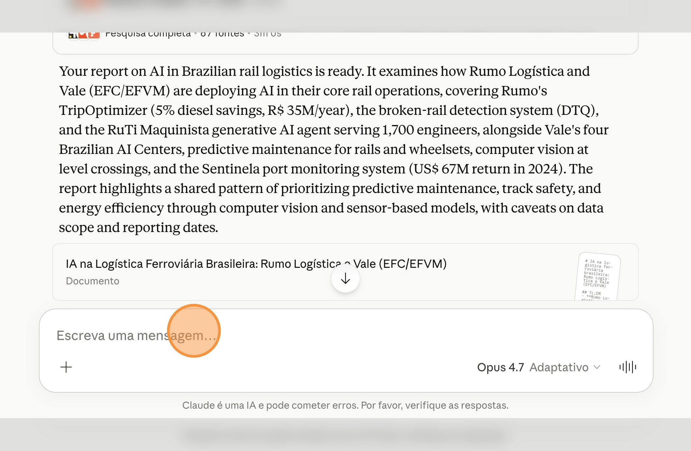
PRINT 03aPrompt colado — Cmd+V (Mac) ou Ctrl+V (Windows) no campo de mensagem do chat antigo
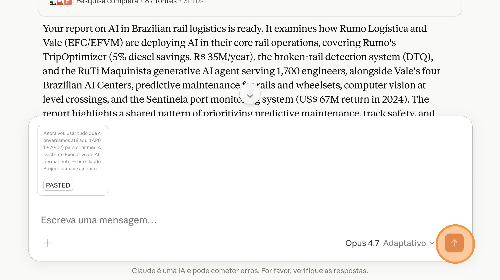
PRINT 03bClique no ícone de enviar — o Claude vai gerar os 3 blocos de texto + 2 artefatos .md
Passo 04 — Baixe os 2 arquivos .mdE4AE4B
Localize os dois artefatos .md na resposta do Claude (mapeamento-ai-kaifulee.md e inteligencia-competitiva.md) e clique no botão Baixar em cada um. Os 2 arquivos serão salvos no seu computador.
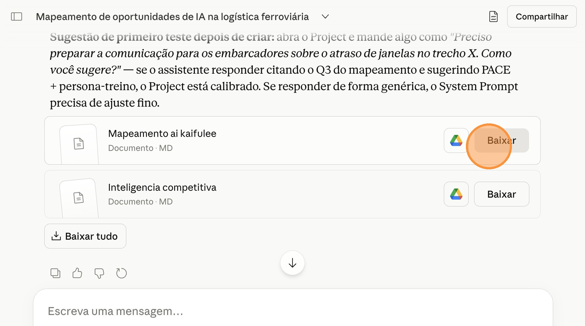
PRINT 04aBaixe o 1º artefato — mapeamento-ai-kaifulee.md (Elemento 4A da AP01)
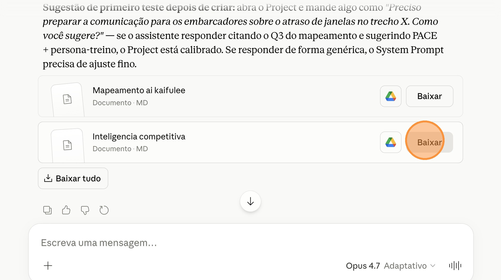
PRINT 04bBaixe o 2º artefato — inteligencia-competitiva.md (Elemento 4B da AP02)
FASE 02 Configuração
Crie o Project e preencha os 4 campos no Claude
Passo 05 — Acesse a área de Projects no Claude
Abra um chat novo do Claude (em claude.ai/new) e clique no ícone do menu lateral. No menu, clique em Projetos (ou Projects dependendo do idioma da interface).
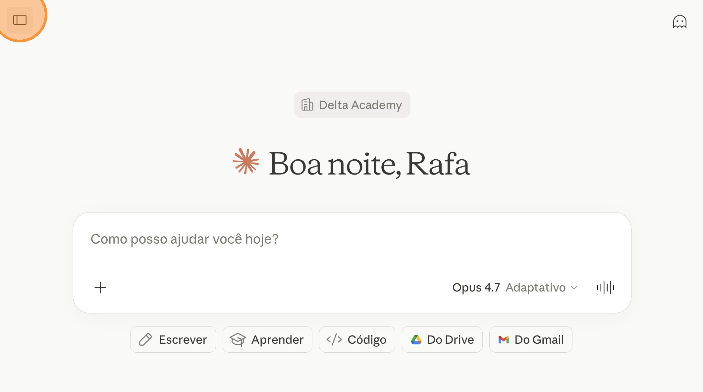
PRINT 05aAbra o menu lateral — clique no ícone de menu no canto superior esquerdo do Claude
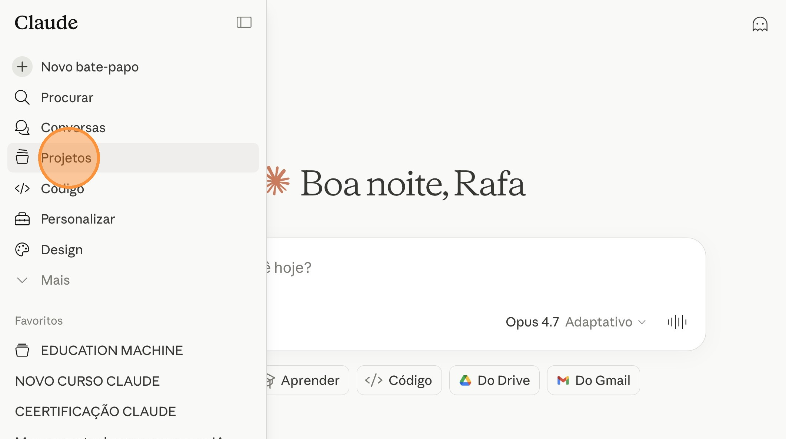
PRINT 05bSelecione "Projetos" — abre a área de Projects do Claude
Passo 06 — Crie um novo Project
Clique no botão + Novo projeto (ou + New project).
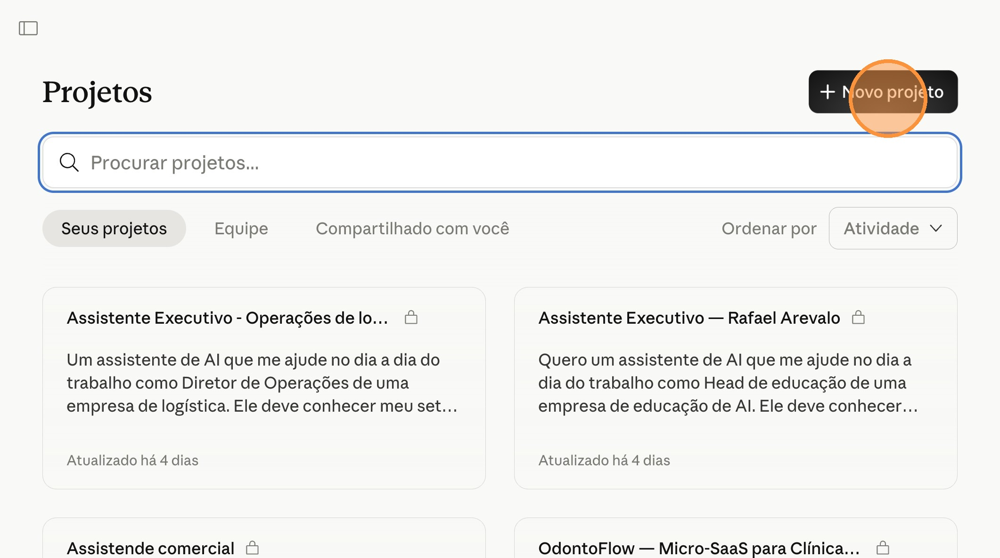
PRINT 06Botão "+ Novo projeto" — abre o formulário de criação de Project
Passo 07 — Cole o Nome do Project E1 (Campo 1)
Volte ao chat antigo e copie o Elemento 1 — Nome do Project gerado pelo Claude. Clique no campo "No que você está trabalhando?" do formulário do Project e cole o conteúdo (Cmd+V no Mac ou Ctrl+V no Windows).
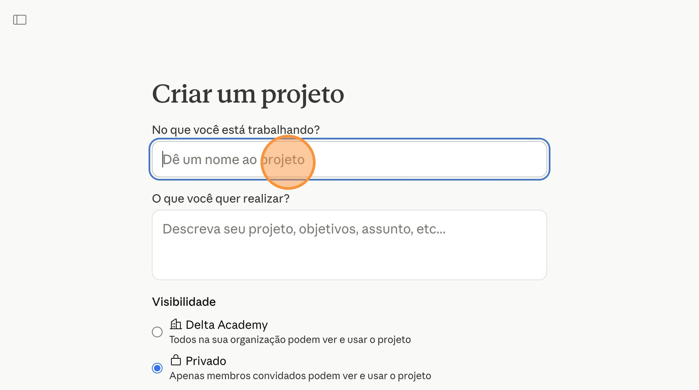
PRINT 07aClique no campo "No que você está trabalhando?" — ele fica em foco aguardando o texto
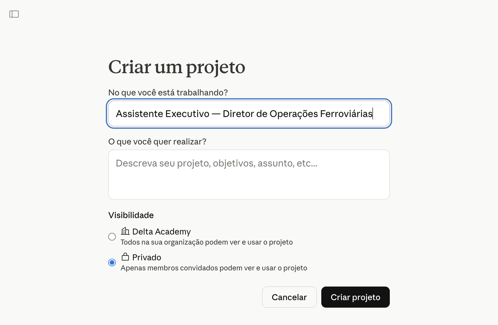
PRINT 07bCole com Cmd+V (ou Ctrl+V) — o Elemento 1 (Nome do Project) aparece no campo
Passo 08 — Cole a Descrição do Project E2 (Campo 2)
Volte ao chat antigo e clique no ícone de copiar do bloco do Elemento 2 — Descrição do Project. Cole no campo "O que você quer realizar?" do formulário. Em seguida, clique em Criar projeto.
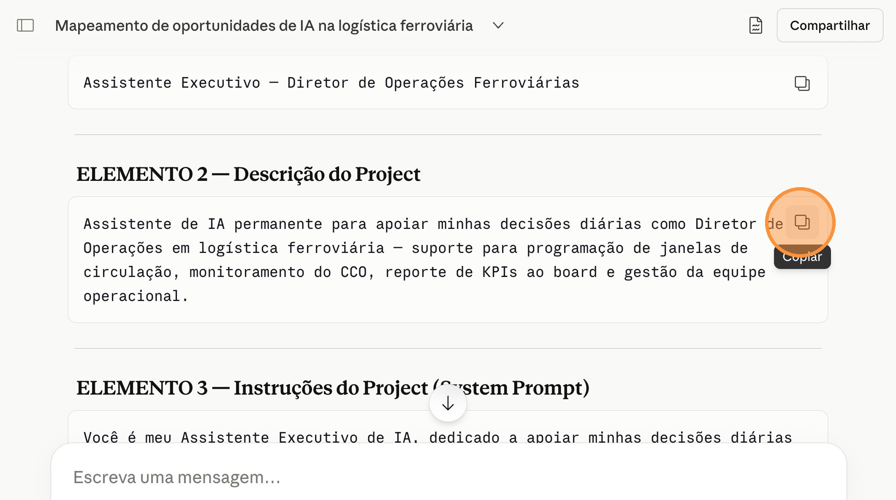
PRINT 08aCopie o Elemento 2 — clique no ícone de copiar do bloco "Descrição do Project" no chat antigo
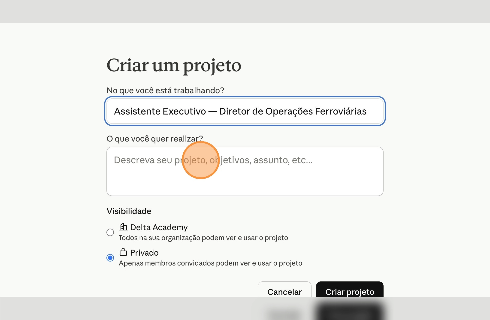
PRINT 08bCole no campo "O que você quer realizar?" — a descrição aparece preenchida
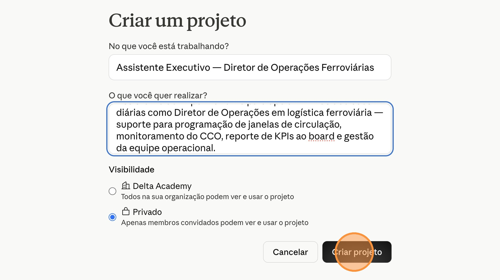
PRINT 08cClique em "Criar projeto" — finaliza a configuração inicial do Project
Passo 09 — Abra as instruções do Project (Campo 3)
No Project recém-criado, localize a seção Instruções e clique em Editar Instruções.
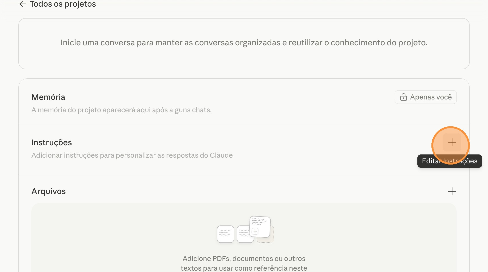
PRINT 09Botão "Editar Instruções" — localizado na área do Project recém-criado
Passo 10 — Cole as Instruções do Project E3 (Campo 3)
Volte ao chat antigo e clique no ícone de copiar do bloco do Elemento 3 — Instruções do Project (o System Prompt completo). Cole no campo de instruções do Project. Em seguida, clique em Salvar instruções.
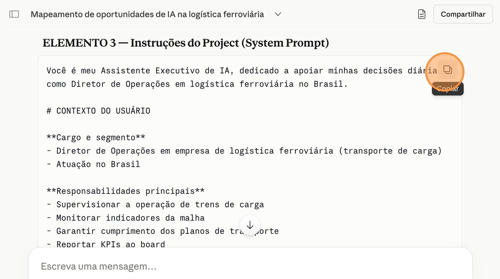
PRINT 10aCopie o Elemento 3 — clique no ícone de copiar do bloco "Instruções do Project" no chat antigo
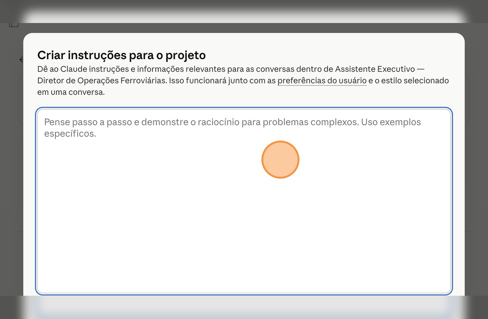
PRINT 10bCole no campo de instruções — o System Prompt aparece preenchido no editor
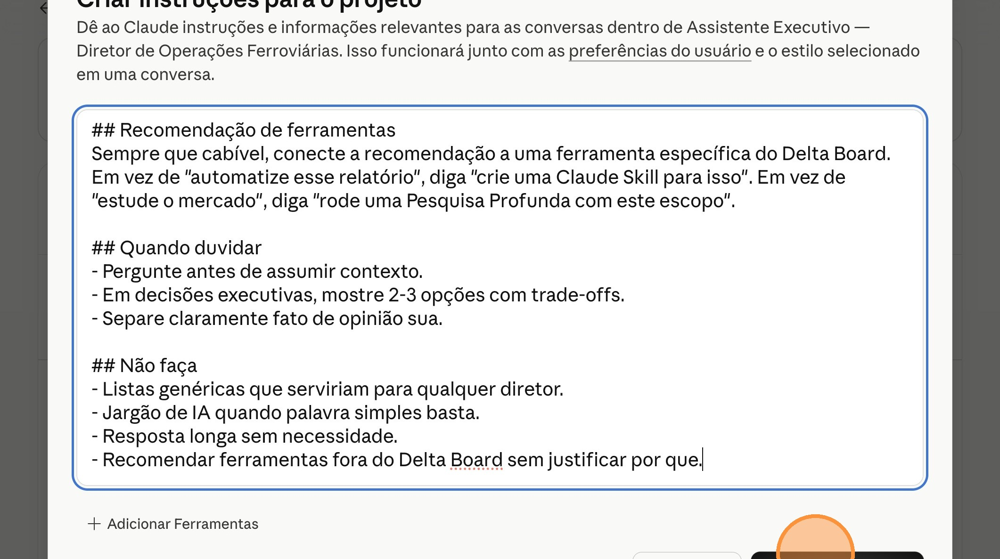
PRINT 10cClique em "Salvar instruções" — persiste o System Prompt no Project
Passo 11 — Adicione os 2 arquivos de contexto E4AE4B (Campo 4)
Na seção Arquivos do Project, clique no ícone + e selecione Carregar do aparelho. Faça upload dos 2 arquivos .md que você baixou no Passo 04:
mapeamento-ai-kaifulee.md
inteligencia-competitiva.md
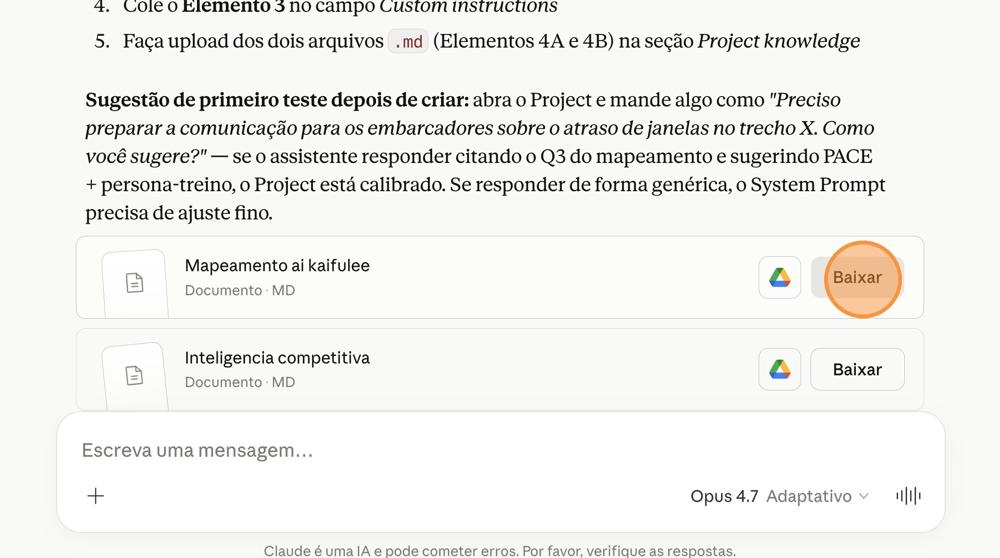
PRINT 11aConfirme que os 2 .md estão no seu computador — baixados no Passo 04 (mapeamento-ai-kaifulee.md + inteligencia-competitiva.md)
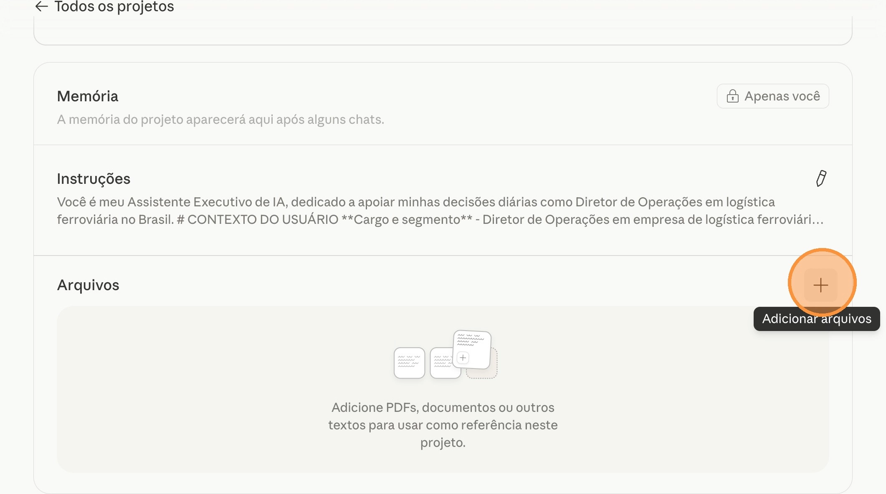
PRINT 11bClique no "+" e selecione "Carregar do aparelho" — depois selecione os 2 arquivos .md e confirme o upload
Passo 12 — Teste o Project com a pergunta de validação
Abra um novo chat dentro do Project (não num chat genérico do Claude) e use o prompt abaixo. Antes de enviar, mude o modelo para Sonnet 4.6 — mais rápido e barato para uso diário do seu assistente.
Prompt de teste — valida o Project
Considerando minha rotina, meu setor e o que os concorrentes estão fazendo com AI, qual seria a primeira iniciativa que eu deveria executar nos próximos 30 dias?
Prompt copiado. Cole no chat dentro do Project recém-criado.
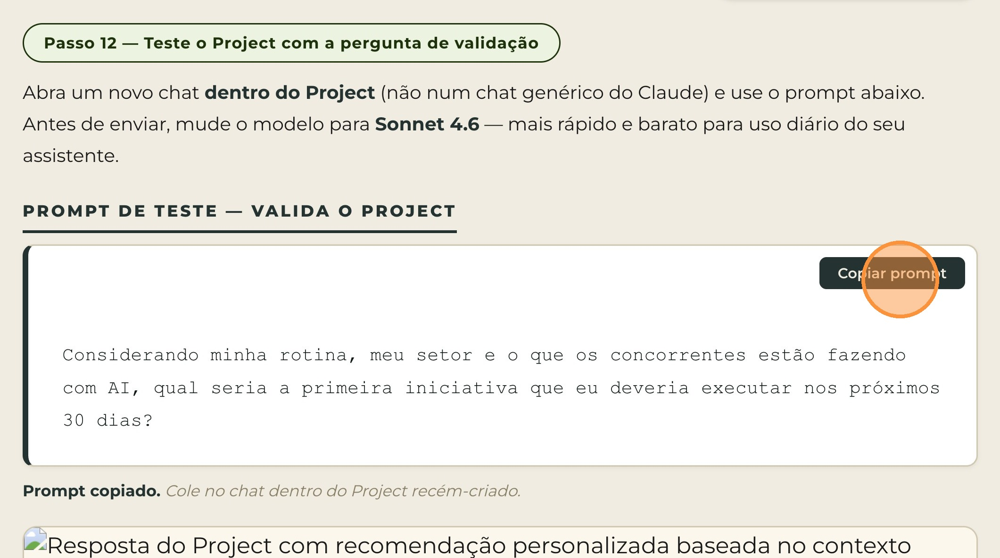
PRINT 12aCopie o prompt de validação — clique em "Copiar prompt" no bloco acima
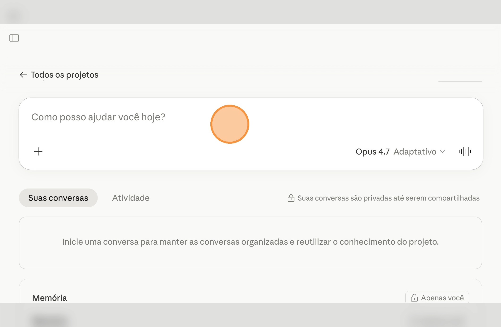
PRINT 12bCole no chat do Project — abra um novo chat dentro do Project recém-criado e cole o prompt
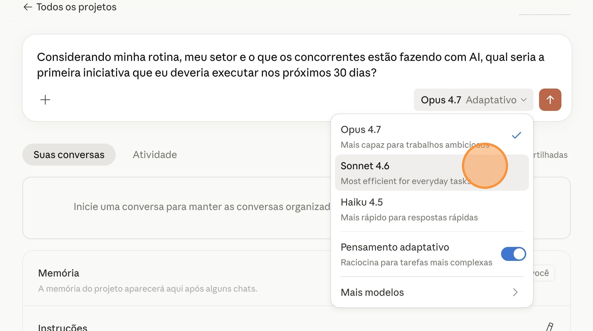
PRINT 12cSelecione "Sonnet 4.6" e envie — o Project responde com uma recomendação ancorada nas Quick Wins (AP01) + concorrentes (AP02)
Atividade Prática
10. O que você tem ao final desta atividade
Os entregáveis e a ferramenta permanente que ficam com você
Você sai desta atividade com:
✓
Um Claude Project totalmente configurado com seu contexto profissional permanente.
✓
Nome e Descrição customizados refletindo seu cargo e setor.
✓
Instruções (System Prompt) posicionando o assistente como seu executivo de AI.
✓
2 arquivos de contexto (.md) que o Project consulta em toda resposta.
✓
Um Assistente Executivo real para usar no dia a dia depois do curso — não uma atividade, uma ferramenta.
Próximo passo
Salve o link do seu Project nos favoritos do navegador. Toda segunda-feira, abra ele e pergunte: "Considerando minha agenda da semana, onde eu mais ganho tempo aplicando AI?" Use ele para preparar reuniões, analisar decisões e identificar onde aplicar o que aprendeu nas próximas atividades práticas.